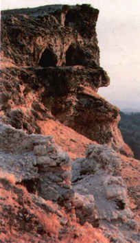

 |
Apollonia Salbace (Medet Höyüðü) Denizli'nin Çal ilçesinin yaklaþýk 8 km kuzeybatýsýnda bulunan Ortaköy kasabasý yakýnýndaki Dionysopolis kenti, Suriye Krallýðý "Seleukoslar" döneminde kurulmuþ olup, daha sonra Bergama Krallýðý egemenliðine girmiþtir. Apollon Lermenos Tapýnaðý Bahadýrlar köyüne 4 km uzaklýktadýr. Menderes vadisine uzanan tepenin ortasýnda bulunan tapýnak dikdörtgen planlýdýr. Yapýnýn temelleri Hellenistik, üst bölümleri ise Roma dönemine aittir. Tapýnaðýn güneyindeki bir sýra sütun kaidesinden peripteros planlý olduðu anlaþýlmaktadýr. Tapýnaðýn batýsýnda bulunan portikonun bir bölümü ayaktadýr. |
| Dionysopolis Denizli'nin Çal ilçesinin yaklaþýk 8 km kuzeybatýsýnda bulunan Ortaköy kasabasý yakýnýndaki Dionysopolis kenti, Suriye Krallýðý "Seleukoslar" döneminde kurulmuþ olup, daha sonra Bergama Krallýðý egemenliðine girmiþtir. Apollon Lermenos Tapýnaðý Bahadýrlar köyüne 4 km uzaklýktadýr. Menderes vadisine uzanan tepenin ortasýnda bulunan tapýnak dikdörtgen planlýdýr. Yapýnýn temelleri Hellenistik, üst bölümleri ise Roma dönemine aittir. Tapýnaðýn güneyindeki bir sýra sütun kaidesinden peripteros planlý olduðu anlaþýlmaktadýr. Tapýnaðýn batýsýnda bulunan portikonun bir bölümü ayaktadýr. Bahadýrlar Köyü Camii'nde bulunan yazýttan portikonun Domitian döneminde Apollon Lermenos Tapýnaðý köleleri tarafýndan yapýldýðý ve Apollon'a ithaf edildiði anlaþýlmaktadýr. Hieron'da bulunan heykel kaidelerindeki yazýtlardan buranýn çok önemli bir kült merkezi olduðu anlaþýlmaktadýr. Kült Apollon Lermenos "çifte balta" dýr. Sebastopolis Sebastopolis, Denizli ili Tavas ilçesinin 19 km güneyinde bulunan Kýzýlca kasabasýnýn 2 km doðusunda yer almaktadýr. Antik kentin ilk kuruluþu bilinmemekle beraber yüzeydeki kalýntýlar Roma ve Bizans dönemlerine aittir. Kalýntýlarý:Höyük Tepesi, stadyum ve nekropoldür. Trapezopolis Trapezopolis, Denizli ili, Babadað ilçesi, Bekirler köyü, Boludüzü mevkisinde bulunmaktadýr. Antik kentin kuzeyden güneye doðru uzanan düzlük üzerine, arazinin coðrafi yapýsýna göre kurulduðu anlaþýlmaktadýr. Kalýntýlar tamamen toprak altýnda olup, yüzeyde bazý yapý kalýntýlarý izlenebilmektedir. Yüzeyedeki kalýntýlar Roma ve Bizans dönemi özellikleri göstermektedir. |